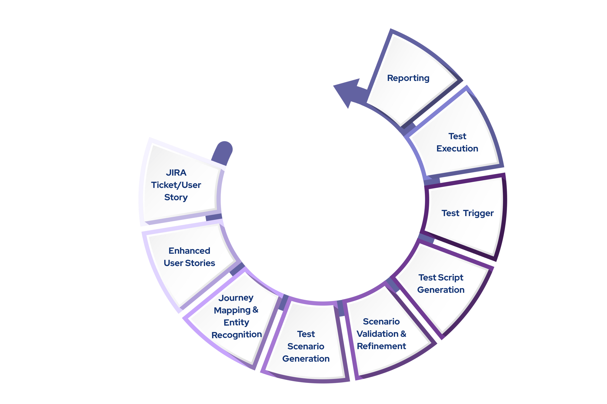

Patient portal for a healthcare company
Elinext delivered a secure AWS-backed health portal with PHI and country data rules in scope.
Read the case studyNewpage is hiring full-stack talent while growing regulated digital health work. This brief shows one small way to add capacity without weakening cloud, CI/CD, and QA controls.
Why we are here: we saw the Full Stack Engineer signal at Newpage, and your ACCEL and NAT Studio pages point to active platform work in regulated health.
The hiring signal says Newpage is adding delivery capacity, not starting from zero. ACCEL already has many health modules, from user management to sensor data and notifications. That creates full-stack work across API contracts, data rules, and release checks. If new engineers join without tight platform guardrails, delivery can move faster for a sprint and slower after that. Sumanth's cloud and CI/CD background is the right control point for this risk.
ACCEL lists many reusable modules. First step: map each one to owners, API contracts, test coverage, and rollback paths.
NAT Studio already tests URLs and Jira stories. Dogfood it on ACCEL pages, then feed failures into CI/CD gates.

Newpage's public NAT Studio surface gives a practical QA angle: use the same story-to-test idea on your platform pages and release flows.
A six-week pilot focused on ACCEL delivery, release evidence, and cloud-safe full-stack output.
Map ACCEL modules to API contracts, shared components, and owners so full-stack work lands without hidden handoffs.
Add CI checks for cloud config, accessibility, image format, and regression tests tied to NAT Studio release flows.
Harden AWS and Kubernetes release paths with rollback steps, secrets review, deployment evidence, and owner-ready support notes.
Ship one production-ready feature slice with weekly demos, measured handover notes, and a clear fit review.
Elinext is a full-cycle software development company, active since 1997, with about 700 in-house specialists and no freelancers. For Newpage, the fit is regulated web, cloud, QA, and DevOps work with ISO 9001 and ISO 27001 controls. Our teams have served Siemens, Broadcom, Volkswagen, and TRUMPF. We can work as a dedicated squad under your Product Owner. That matches the pilot above: focused senior capacity, clear release evidence, and no extra management load.
Elinext delivered a secure AWS-backed health portal with PHI and country data rules in scope.
Read the case study
Elinext improved CI/CD and AWS use for a pharmaceutical team while fitting its agile process.
Read the case studyShare one ACCEL bottleneck. We can return a clear squad plan.
Talk to Elinext